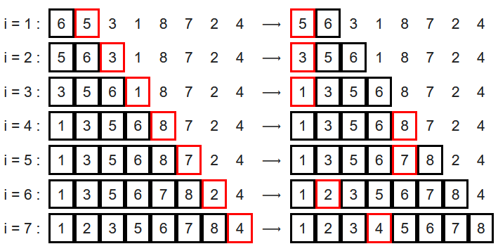
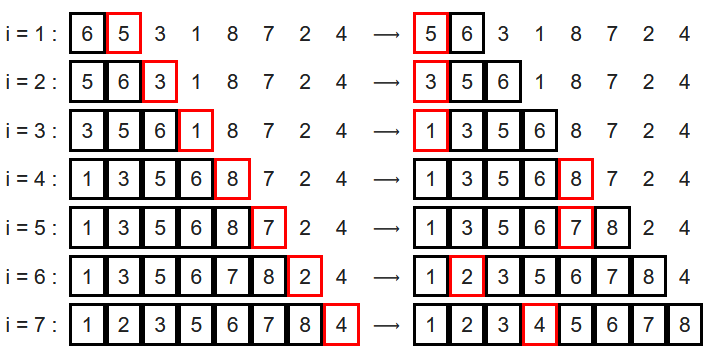

Insertion Sort
This is a sorting algorithm commonly used by card players to organize cards. At each stage of
sorting, you take the leftmost first in the “heap to be sorted” that is in your hand, and insert it
in its place into the “left heap already sorted”. At the end, your cards are sorted in ascending
order in your hand.
Insertion Sort Animation
 

Run-time Analysis
Insertion sort runs in O(n) time in its best case and runs in O(n^2) in its
worst and average cases.
Best case analysis
Insertion sort performs two operations: it scans through the list, comparing each pair of elements,
and it swaps elements if they are out of order. Each operation contributes to the running time of
the algorithm. If the input array is already in sorted order, insertion sort compares
O(n) elements and performs no swaps (in the Python code above, the inner loop is never
triggered). Therefore, in the best case, insertion sort runs in O(n)time.
Worst and Average Case Analysis
The worst case for insertion sort will occur when the input list is in decreasing order. To insert
the last element, we need at most n-1 comparisons and at most n-1 swaps. When analyzing algorithms,
the average case often has the same complexity as the worst case. So insertion sort, on average,
takes O(n^2) time.
Recurrence relation in best case: T(n) = T(n−1)+1, T(2) = 1, and the solution is
T(n) = O(n).
Insertion sort: Python implementation
def insertionSort(nums):
for step in range(1, len(nums)):
key = nums[step]
j = step - 1
# Compare the key with each element on the left of it until an element smaller than it is found
# For descending order, change keyarray[j].
while j >= 0 and key < nums[j]:
nums[j + 1] = nums[j]
j = j - 1
# Place the key after the element just smaller than it.
nums[j + 1] = key
return nums
arr = [76,32,65,2,80,11,7]
print(arr)
res = insertionSort(arr)
print(res)